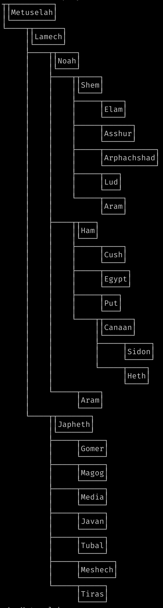

Features
Tree Operations
- A generic tree data structure and all the basic functions required to manipulate immutable instances.
- A zipper for navigation and efficient modification.
- Measure node counts/heights/depth/degree, crop by depth, filter trees, unfold level trees, select subtrees, zip/unzip trees, grow trees, and traverse in any order.
- Annotate nodes with their level index, for example
2.3.11.1, encoding their path from root. - Numeric and boolean folds on nodes. For example sum all nodes, find maximum node value for some given order, or check if all nodes are
true. All operations short-circuit whenever possible. - Folds can operate on entire trees, replace nodes, annotate nodes, and are composable to tuples and structs. This allows you to count nodes, annotate with depth, and crop depth, for example, in a single fused iteration over the tree.
- Effectful tree operations like read/write directory to/from tree of paths.
Tree Codecs
Encode/decode losslessly to/from different tree encodings.
| Name | Codec Source |
|---|---|
| Nested arrays | source |
| Edge lists | source |
| Indented string | source |
| Path List | source |
| Prüfer codes | source |
Law tests test encode/decode round-trip.
Tree Instances
| Name | Instance | Typeclass | Laws |
|---|---|---|---|
| Applicative | source | source | source |
| Covariant | source | source | source |
| Equivalence | source | source | source |
| Foldable | source | source | source |
| Monad | source | source | source |
| Order | source | source | source |
| Traversable | source | source | source |
Laws are listed in the book of laws and law tests can be found here.
Functions like mapEffect
and
traverseEffect that run
a effectful functions on the tree have pre-order variants at the pre key of
the function. For example, the
mapEffect.pre
function will traverse the tree in depth-first pre-order.
Tree Generation
- A customizable arbitrary for trees with variants for branches, ordered numeric trees, and more.
- Enumerate trees and go forwards and backwards in the list of possible labeled trees for better control of test data.
| Basic | Create a tree, add/remove nodes, and other basic use-cases. |
| Codecs | Encode/decode the same tree through all codecs. |
| Draw | Draw trees in various themes. |
| Fibonacci | A custom fold: unfold the Fibonacci sequence into a linear tree. |
| Folds | Fusing folds into tuples and structs. |
| Genealogy | Level labels, bottom grounded subtrees, and encoding to indented strings. |
| Generate | Enumerate and generate trees. |
| Layout | Alternate tree layouts using the Draw module. |
Drawing Trees
Draw trees for terminal output. Customize layout and symbols, and compose layouts from parts. All functions are ANSI text aware and should work with styled text and wide characters.
Click on the example screenshots to go to the source code.
-
You can place anything in multiline node labels, even boxes. 
-
Show emojis.
- Build custom layouts.

- Theme the glyphs.